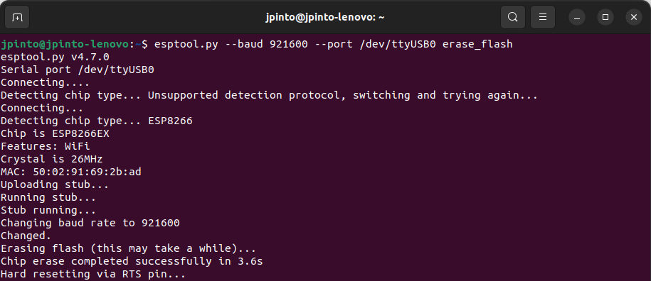
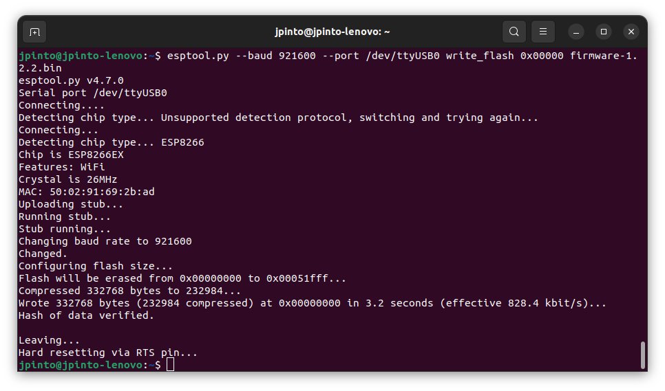

Kopis Drone Setup
In this section, we describe the setup of the Kopis Cinewhoop 3” drone. Equipped with a Kakute H7 v2 flight controller and an ESP8266 module for communication with an offboard computer, the Kopis Cinewhoop 3” is a small drone that enables the fast prototyping and testing of control algoritms in dedicated flight arenas such as the Taguspark Flight Arena.

Arena Setup
ID |
IP |
Port |
AP SSID |
AP Password |
Station SSID |
Status |
Config File |
|---|---|---|---|---|---|---|---|
7 |
192.168.1.247 |
15007 |
CineWhoop3-7 |
pixracer |
Quadrotor |
❌/✔️ |
|
8 |
192.168.1.248 |
15008 |
CineWhoop3-8 |
pixracer |
Quadrotor |
✔️ |
|
9 |
192.168.1.249 |
15009 |
CineWhoop3-9 |
pixracer |
Quadrotor |
✔️ |
|
10 |
192.168.1.250 |
15010 |
CineWhoop3-10 |
pixracer |
Quadrotor |
✔️ |
The vehicles are configured to connect to the station network if the Statis SSID is detected. Otherwise, the vehicles will create an AP with the AP SSID and AP Password, according to the table above.
Running the Kopis 3”
Install the Pegasus GNC code by following the instructions on the Installation page.
Turn on the Kopis 3” drone by connecting the battery.
Make sure your computer is connected to the station network or the AP network generated by the vehicle.
Ensure that you can see the vehicle in the Flight Arena desktop computer using the Mocap system.
Flight arena desktop computer
The name of the vehicle must follow the standard naming convention, e.g.,
drone7, in order for the GNC code to properly receive and use the pose information. Check the Taguspark Flight Arena page for more information.Run the following command to start the GNC code:
ros2 launch pegasus kopis.launch.py vehicle_id:=<vehicle_id>Default vehicle ID and namespace
If no vehicle_id is provided, the default
vehicle_idis 7. The default namespace isvehicle_namespace:=drone.
The vehicle should now be connected to the offboard computer and ready to receive commands.
Open the terminal console to control the vehicle
ros2 run pegasus_console pegasus_console -i <vehicle_id>Launching all kopis drones at the same time
You can also launch all the Kopis drones at the same time by running the following command:
ros2 launch pegasus all_kopis.launch.pyNote that you will still need to open a console for each vehicle to control them individually, or you can write a script to perform automated tasks.
All the provided vehicles are configured such that they will not arm unless an RC remote is connected. This is a safety feature to prevent the vehicle from taking off unintentionally. All the vehicles are binded to the same RC remote, so you can use the same remote to control all the vehicles.
Bill of Materials
In order to replicate the Kopis setup adopted on the Taguspark Flight Arena, the following components are required:
Kakute H7 Setup
Configure the Kakute H7 v2 flight controller with PX4 firmware (v1.14.2), by following the instructions on the PX4 documentation. Start by cloning and compiling the PX4 firmware repository and running the following commands:
# Clone PX4 firmware repository git clone https://github.com/PX4/PX4-Autopilot.git cd PX4-Autopilot git checkout v1.14.2 # Compile the bootloader for the board make holybro_kakuteh7v2_bootloader # Compile the firmware for the board make holybro_kakuteh7v2_default
Install DFU-Util to flash the bootloader into the Kakute H7 v2:
sudo apt-get install dfu-util
Connect the Kakute H7 v2 to the computer using a USB cable and put the board in bootloader mode by pressing the button on the board while connecting the cable. Flash the bootloader into the Kakute H7 v2:
dfu-util -a 0 --dfuse-address 0x08000000:force:mass-erase:leave -D build/holybro_kakuteh7v2_bootloader/holybro_kakuteh7v2_bootloader.bin dfu-util -a 0 --dfuse-address 0x08000000 -D build/holybro_kakuteh7v2_bootloader/holybro_kakuteh7v2_bootloader.bin
After flashing the bootloader, reboot the Kakute H7 v2 without pressing the button. Upload the firmware by using QGroundControl and following the instructions on the PX4 documentation or run the command.
make holybro_kakuteh7v2_default upload
After having the firmware installed, connect the Kakute H7 v2 to the computer and open QGroundControl.
Load the Kopis parameters from the configuration file kopis7.params.
Change the MAV_SYS_ID parameter to the ID of the new vehicle.
ESP Configuration
Connect the USB-FDTI cable to the ESP, and turn the switch into the
PROGRAMposition.
Warning
Check whether your ESP runs with 3.3V or 5V before connecting the FDTI cable
Install the esptool by running the following command:
pip install esptool
Download the custom compiled firmware from here.
Erase the ESP flash memory by running the following command:
esptool.py --baud 921600 --port /dev/ttyUSB0 erase_flash
{kind=link}
Flash the firmware into the ESP using the following command:
esptool.py --baud 921600 --port /dev/ttyUSB0 write_flash 0x00000 firmware-1.2.2.bin
{kind=link}
Reboot the ESP with the switch in the
UARTposition.Connect the computer to the
PixRacerwifi network generated by the ESP. The password ispixracer.
{kind=link}
On your browser, go to the IP address
192.168.4.1and click on theSetuplink. This will open a page with the default configurations.
{kind=link}
Change the configurations according to the image bellow, by setting the
UDP Port,AP SSID``and ``Station IPaccording to the standard adopted in the table above.
{kind=link}
Connection Diagram
TODO
If you have any questions or need help with the setup, please check the ardupilot reference page.